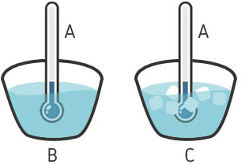
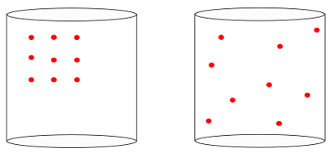

Aula6-48: Leis da termodinâmica
Lei zero da termodinâmica
|
É a lei que estabelece a transitividade do equilíbrio térmico. Isto é, se um corpo A está simultaneamente em equilíbrio térmico com um corpo B e com um corpo C, então B e C também estão em equilíbrio térmico entre si. |
 |
Primeira lei da termodinâmica
Esta lei é uma versão da lei de conservação de energia. Ela afirma que o calor cedido a um sistema contendo uma porção gasosa é igual à variação de sua energia interna somada ao trabalho realizado por essa porção de gás.
É comum também vermos essa mesma lei expressa do seguinte modo:
➔ OBS. SOBRE A VARIAÇÃO DE ENERGIA INTERNA DO GÁS:
A variação de energia interna do gás ocorre sempre que varia a temperatura do gás, pois, para gases ideais, a variação de energia interna é função da variação de temperatura:
Combinando essa equação com a equação de Clapeyron, obtemos a seguinte relação:
➔ CONVENÇÃO DE SINAIS:
|
Q |
Recebe calor |
Cede calor |
Adiabática |
|
Q > 0 |
Q < 0 |
Q = 0 |
|
|
Δ U |
A temperatura aumenta |
A temperatura diminui |
Isotérmica |
|
Δ U > 0 |
Δ U < 0 |
Δ U = 0 |
|
|
τ |
O volume expande |
O volume comprime |
Isovolumétrica |
|
τ > 0 |
τ < 0 |
τ = 0 |
Trabalho nas transformações adiabáticas
Como sabemos, as transformações adiabáticas são aquelas em que não há troca de calor entre o gás e o meio externo. Assim, a partir da primeira lei da termodinâmica, podemos concluir que:
Segunda lei de termodinâmica
➔ ENTROPIA
Entropia é a grandeza física que indica o grau de desordem de um sistema. A imagem abaixo ilustra um recipiente que contém gás em seu interior. Observe que o grau de desordem na segunda imagem é maior que o da primeira: na primeira, as moléculas de gás concentram-se todas em um canto do recipiente; na segunda, elas se espalham por todo o recipiente.

➔ ENUNCIADOS DA SEGUNDA LEI: ao longo da história, muitos cientistas se referiram à segunda lei da termodinâmica de modos diferentes, porém nunca contraditórios. Abaixo estão listados alguns dos enunciados mais notórios:
I. Enunciado geral:
Num sistema termodinamicamente isolado, a entropia tende sempre a aumentar. Em outras palavras: a variação de entropia é sempre maior que zero ; ou ainda: qualquer processo espontâneo tende a aumentar a desordem do sistema
II. Enunciado de Clausius
O calor não pode fluir espontaneamente de um corpo de temperatura menor para outro corpo de temperatura maior.
III. Enunciado de Kelvin-Planck
É impossível construir uma máquina que, operando em ciclos termodinâmicos, converta integralmente em trabalho todo o calor que recebe.
A segunda lei na prática:
⚛ Ao quebrarmos um frasco de perfume, as moléculas que lhe dão odor rapidamente se espalham pelo ambiente, aumentando o grau de entropia; prova disso é que sentimos o cheiro do perfume logo que ele é quebrado;
⚛ O apodrecimento de produtos orgânicos também depõe a favor da segunda lei: ao mantermos um material orgânico sem vida isolado em um sistema, a entropia do sistema aumenta, fazendo as moléculas do composto orgânico se desintegrarem e dando ao produto o aspecto característico da matéria em putrefação;
⚛ O simples esfriamento de uma xícara de café quente também é consequência da segunda lei da termodinâmica: as moléculas agitadas da bebida tendem a dispersar energia, fazendo a temperatura do café cair;
⚛ Também como consequência dessa lei, não existe máquina térmica que, operando em ciclos, consiga converter integralmente calor em trabalho e, portanto, não existe moto-perpétuo (veremos isso nas próximas aulas).